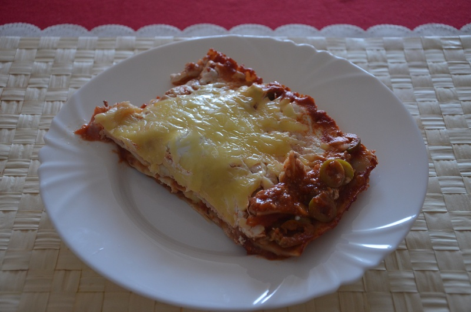

Ještě než jsme odjeli do Anglie, pokusila jsem se o své první lasagne. Přestože jsem se docela bála, jak se povedou, nakonec byl výsledek překvapivě dobrý. Připravovala jsem je podle tohoto receptu, který je (tuším) z Albert magazínu:
- 250g lasagnových plátů
- 1 lžíce olivového oleje
- 1-2 stroužky česneku nebo 1 cibule
- 2x 400g plechovka rajčat
- 8 plátků šunky
- hrst zelených oliv
- 150g bílého jogurtu
- 50g čedaru, strouhaného + na posypání
Plátky lasagní dáme na 5 minut vařit do vroucí osolené vody, pak je osušíme. Olej rozpálíme v pánvi, přidáme česnek a po minutě rajčata. Necháme 5 minut probublávat, osolíme a opepříme. Pak začneme vrstvit do vymazané zapékací mísy: pláty lasagní, šunku, omáčku, olivy. Vrstvy zopakujeme, končit bychom měli olivami. Navrch nalijeme osolený jogurt smíchaný se sýrem. Posypeme dalším sýrem a 15 minut zapékáme při 180°C.

Vzhledově nic moc, ale byly fakt výborný :)
Komentáře (1)
Komentáře jsou uzavřené.